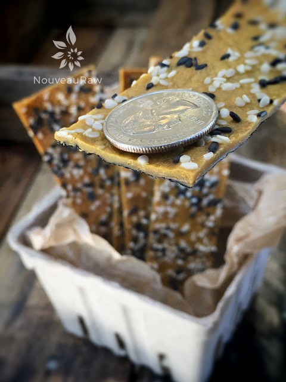

Black Sesame Cheesy Chipotle Nori Crisps

~ raw, vegan, gluten-free ~
I remember one of the first times that Bob and I went grocery shopping together to pick up some food while we were traveling.
I grabbed a cart headed for the produce section, and Bob wandered off in another direction. We met back up in the middle aisle and compared our findings… I had fresh fruits, and Bob had bags of dried seaweed.
Seaweed? Dried seaweed? You’re going to eat that? Really? Seaweed? I had never eaten or even seen dried seaweed before. From that day on, it became a staple in our lives. I have come to like it, but I don’t love it like Bob. I don’t care for it as my main snack, but I do enjoy it in small doses mixed up with other ingredients.
Much like this treat… smother it with “cheesy” chipotle sauce, and then we are talking serious business. I have seen this type of recipe made in rolls, which I am sure I will be making soon but I thought it would be nice to make them into crackers. This recipe will yield five sheets of nori crackers. But because I can’t ever leave anything alone, I started getting creative with the toppings. Each sheet ended up with something different.
The nori has two sides. One side is shinier then the other, and the shinier side should always face outside, so the sushi rice is always applied on the rougher side. The sushi rice must be placed on the rougher side because it absorbs more moisture and sticks to the rice better.
I adapted and slightly modified this recipe from my Spicy Touchdown Cheese Sauce recipe. Shoot you could use about any raw cheese sauce on these, and they would taste amazing. I have been really enjoying ground cumin lately in many of my recipes. Not only do I love the flavor of it, but it is also known for many great health benefits;
It is known to help control stomach pain, indigestion, diarrhea, nausea, and morning sickness. It is also found to be effective in stimulating the menstrual cycle in women. That is just to list a few. It is one the most aromatic spices; cumin gives off a pungent earthy aroma that is warm and almost sweet with hints of pine and lemon. The flavor is strong and slightly bitter with a fresh somewhat herbaceous finish. Goodness, I almost sound like a connoisseur!
Yields 5 nori sheets treats
Toppings:
- coarse Himalayan pink salt
- black & white sesame seeds
Preparation:
- After soaking the cashews, drain and rinse them.
- In a high-powered blender combine the cashews, water, nutritional yeast, roughly chopped bell pepper, smoked paprika, chipotle, and cumin. Blend until the mixture is completely smooth and you don’t feel any grit.
- Place 5 nori sheets out on the mesh sheet that comes with the dehydrator.
- I don’t recommend that you do this on a different surface hoping to transfer them to the dehydrator trays… they get too soft and are hard to move once the sauce goes on. I speak from experience. :)
- Be sure to face the rougher side of the nori sheet, upright.
- Place approximately 1/3 of a cup of sauce in the center of a nori sheet. With an off-set spatula spread the sauce evenly from side to side. Do them one at a time.
- Sprinkle coarse sea salt and sesame seeds on top.
- Dehydrate at 145 degrees (F) for 1 hour, then reduce to 115 (F) for 6-10 hours or until dry.
- Once cooled to room temperature cut into long strips with a sharp knife. These should keep for at least 1 week.
- The edges do curl a little after they are done drying. If you want them to look pretty for presentation, just slice the edges off and enjoy them as payment for your hard work. :)
Culinary Explanations:
- Why do I start the dehydrator at 145 degrees (F)? Click (here) to learn the reason behind this.
- When working with fresh ingredients, it is important to taste test as you build a recipe. Learn why (here).
- Don’t own a dehydrator? Learn how to use your oven (here). I do however truly believe that it is a worthwhile investment. Click (here) to learn what I use.

I stuck a quarter on top of the cracker so you get a feel for just how thin these are.
© AmieSue.com